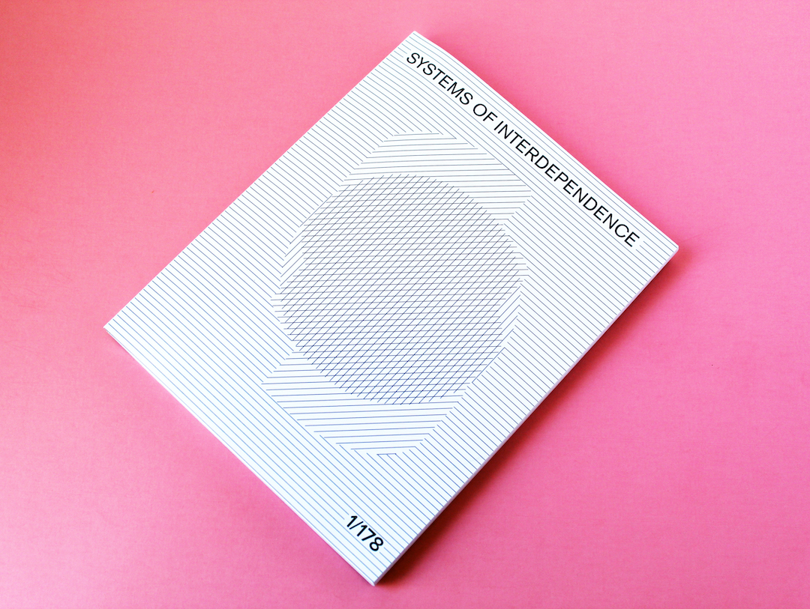
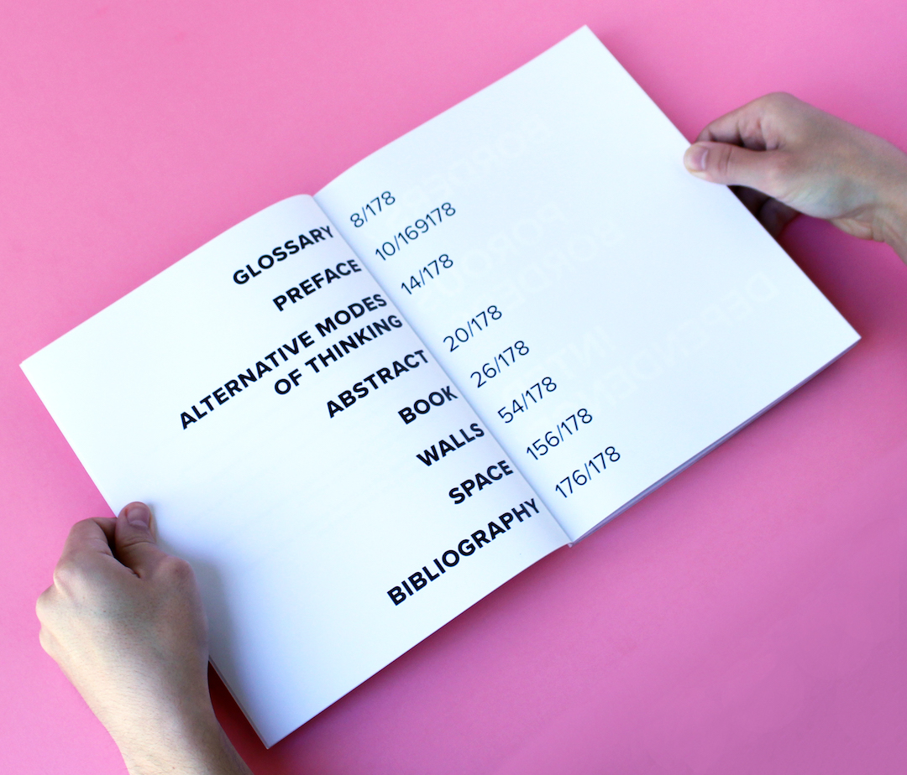
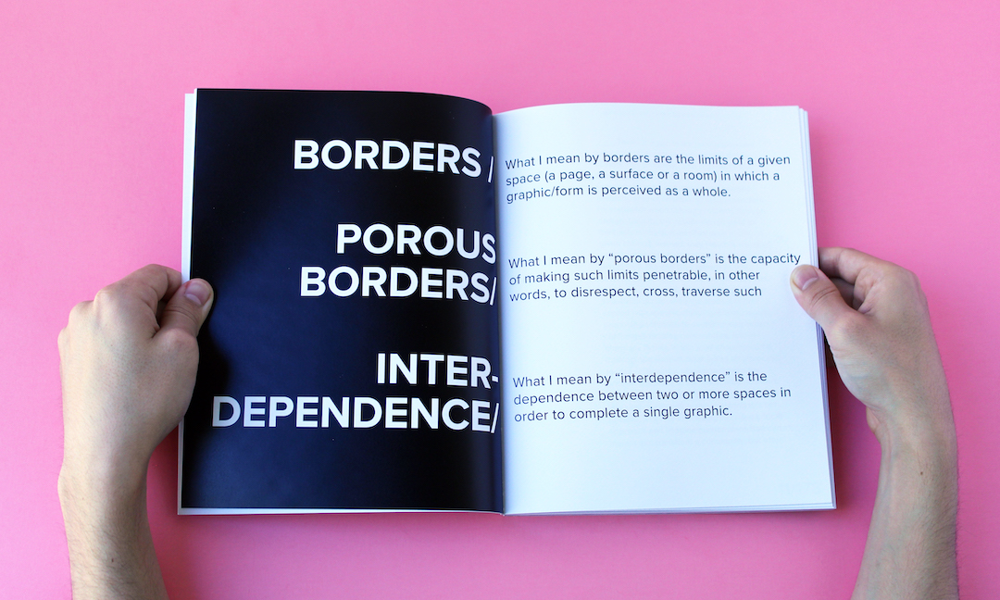
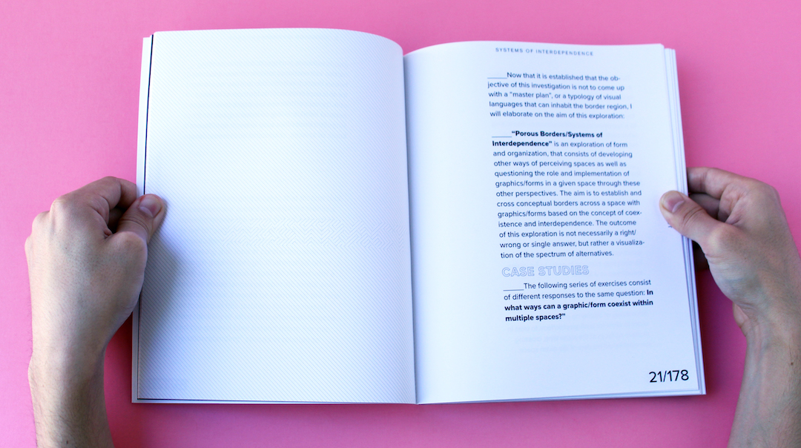
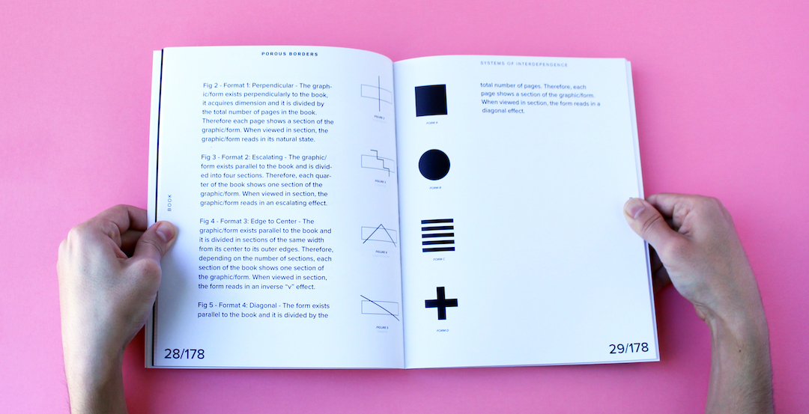
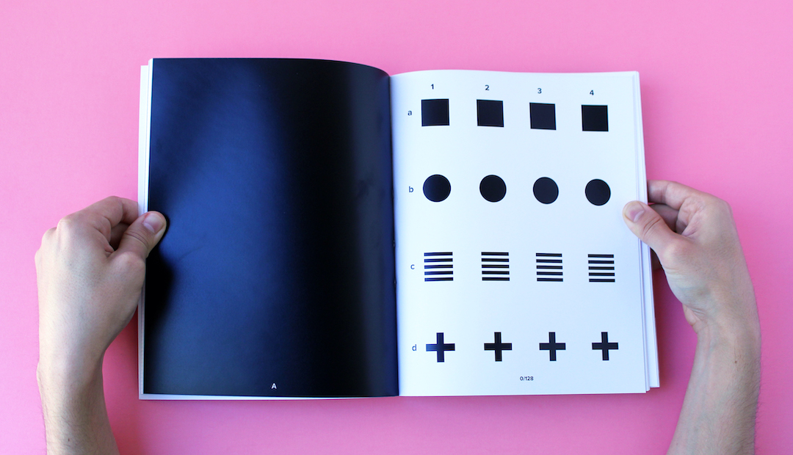
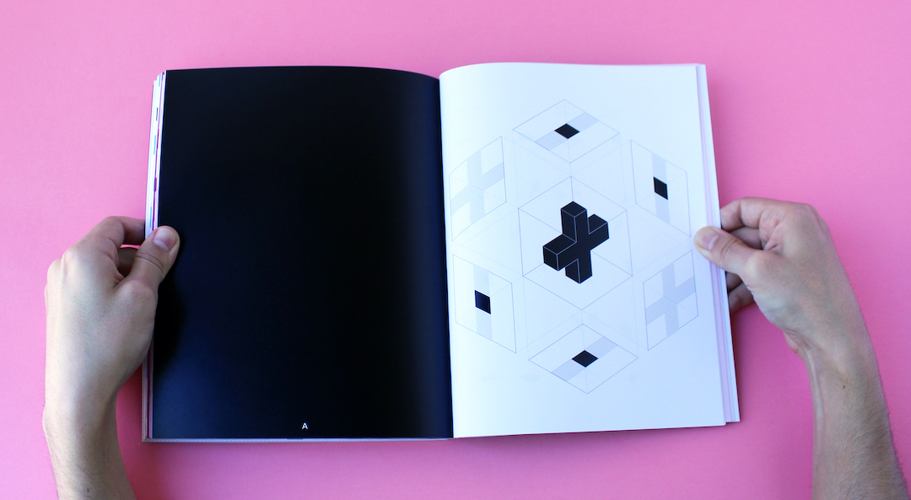
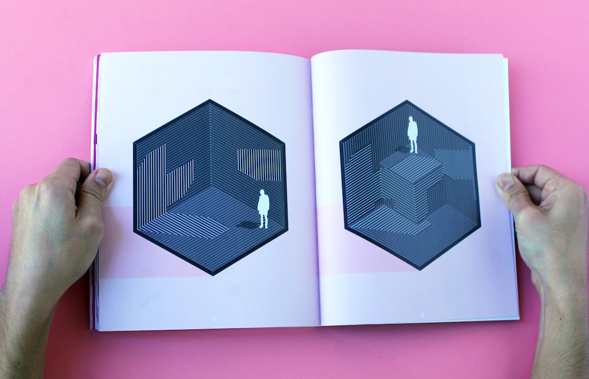
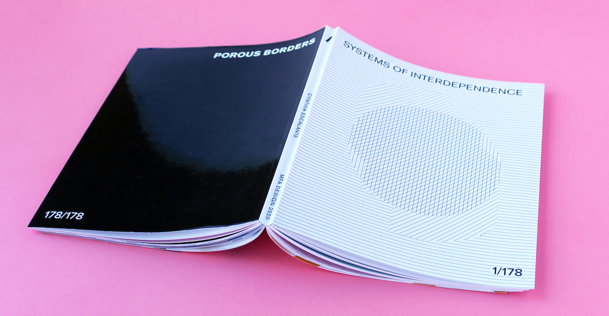

Porous Borders / Systems of Interdependence
“Porous Borders/Systems of Interdependence” is an exploration of form and organization, that consists of developing other ways of perceiving spaces as well as questioning the role and implementation of graphics/forms in a given space through these other perspectives. The aim is to establish and cross conceptual borders across a space with graphics/forms based on the concept of coexistence and interdependence. The outcome of this exploration is not necessarily a right/wrong or single answer, but rather a visualization of the spectrum of alternatives.
Exhibit: California College of the Arts - Infinite Flatness
Photoshop, Illustrator, InDesign
2020